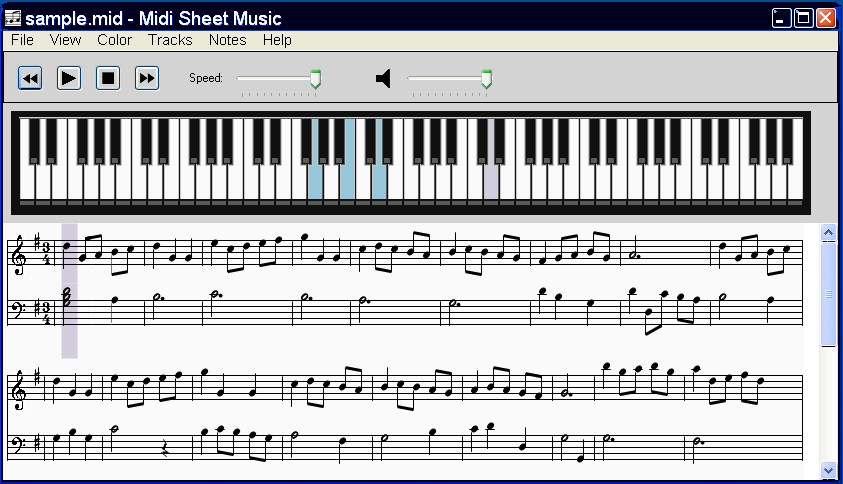
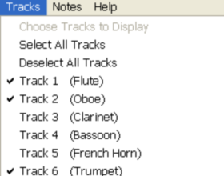
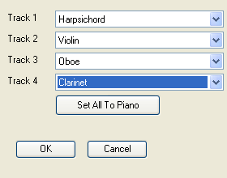
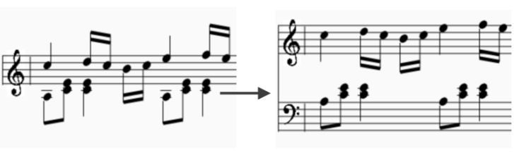
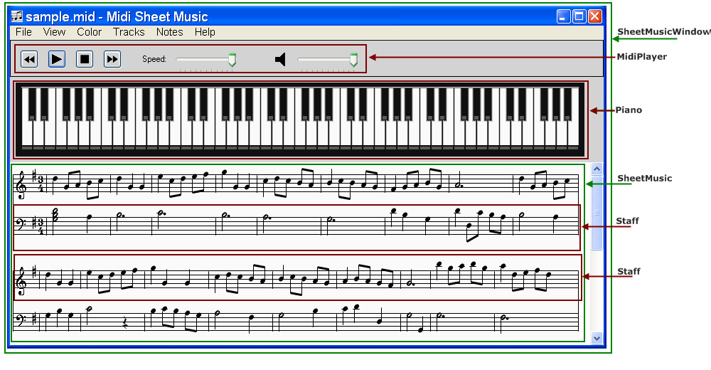

Convert MIDI Files to Sheet Music
Midi Sheet Music is a free program that simultaneously:- Plays MIDI music files
- Highlights the piano notes
- Highlights the sheet music notes

MidiSheetMusic was developed by Madhav Vaidyanathan.
For additional information, see the project homepage at
http://sourceforge.net/projects/midisheetmusic/
Download
MidiSheetMusic runs on Microsoft Windows, Mac OS X, and Linux. The latest version is MidiSheetMusic-2.4.
Please see the Installation section below for supported
Operating Systems. Microsoft Windows XP requires an additional download in
order for MidiSheetMusic to work.
Additional source downloads are available at the project homepage, at
http://sourceforge.net/projects/midisheetmusic/files/midisheetmusic/2.4/
Installation
Microsoft Windows
Download the MidiSheetMusic-2.4.exe file, and double-click to run.
Supported systems:
Microsoft Windows 7
Microsoft Vista
Microsoft Windows XP + Microsoft .NET Framework 2.0
For Windows XP, you must download and install
the Microsoft .NET framework.
Otherwise, MidiSheetMusic will not run on Windows XP.
You can download the Microsoft .NET framework for free at
http://msdn.microsoft.com/netframework/downloads/updates/default.aspx
To determine if the Microsoft .NET Framework is installed,
check if the following directory exists:
C:\WINDOWS\Microsoft.NET\Framework\<version>
Mac OS X
Requires: Mac OS X 10.4 (Tiger) or higher
Download the MidiSheetMusic-2.4-mac.zip file.
Double-click on the zip file. The MidiSheetMusic-2.4.app icon will appear.
Drag the MidiSheetMusic-2.4 icon into the Applications folder, and into the Dock.
Linux Ubuntu
Requires: Linux Ubuntu 9.04 (Jaunty) or higher. To install:
Double-click the midisheetmusic-2.4-linux.ubuntu.deb.
The Ubuntu Package Installer window will appear.
Click the Install Package button to complete the installation.
MidiSheetMusic has a dependency on the Timidity++ MIDI player, which will also be installed.
After the installation, MidiSheetMusic will appear under the menu
Applications : Sound and Video
Features
 Highlight the Sheet Music |
 Highlight the piano notes |
 Display the note letters |
 Color-code the notes |
|
 Select which MIDI tracks to play |
 Select which instruments to use |
|
 Split one MIDI track into two staffs |
|
Sheet Music Features
- Displaying sheet music from MIDI music files
- Printing the Sheet Music
- Saving the Sheet Music as PNG images or PDF file
- Displaying the note letters next to each note
- Displaying the notes in different colors
- Selecting which MIDI Tracks to display
- Combining MIDI Tracks into two staffs (left hand and right hand) for piano songs
- Adjusting the key signature, time signature, and measure length
- Transposing the notes up or down
- Displaying the measure numbers
Playback Features
- Playing the MIDI music
- Highlighting the piano notes as the music is played back
- Highlighting the sheet music notes as the music is played back
- Adjusting the speed of the playback
- Selecting which MIDI Tracks to play
- Selecting the instruments to use for each MIDI Track
- Playing a subset of measures in a continuous loop
Help
Below are some commonly asked questions
- Where do I find MIDI files?
MIDI music files are available all over the internet:
Classical music MIDI files
http://www.classicalmidiconnection.com/
http://www.kunstderfuge.com/
Rock/Pop/Hip-Hop/Contemporary MIDI files
http://www.hamienet.com/Video game music MIDI files
http://www.midishrine.com/ - On Windows XP, MidiSheetMusic-2.1.exe gives an error dialog which I double-click it.
Make sure you have Microsoft .NET installed. See the Installation section on how to install Microsoft .NET for Windows XP.
- On Windows XP, I can't hear any music
In the Control Panel, click on:
Sounds and Audio Devices (Classic View), or
Sounds, Speech, and Audio Devices -> Adjust the system volume (Category View)
A Sounds and Audio Device Properties dialog will appear.
Click on the Advanced button. A Master Volume dialog will appear.
Verify that both the Master Volume and SW Synth volume are at maximum and are not muted. - On Windows, I can hear the music, but the Volume slider doesn't change the volume level.
This is a bug in MidiSheetMusic-2.0. This is fixed in MidiSheetMusic-2.1.
- On Linux, I can't hear any music.
Verify that the Timidity++ music player is working. On the command line run
# /usr/bin/timidity sample.midIf you don't hear the MIDI music, then your Linux sound is not working.
For troubleshooting Linux sound problems on Ubuntu, see:
http://ubuntuforums.org/showthread.php?t=843012 - I'm using a different Linux distribution (not Ubuntu). How do I install MidiSheetMusic?
Unfortunately, you'll need to build MidiSheetMusic from the source.
You can get the source at
http://sourceforge.net/projects/midisheetmusic/files/midisheetmusic/2.1/MidiSheetMusic-2.1-linux-src.tar.gz/download
Follow the instructions in the README.html file for building from the source. - How can I submit a bug/question for this product
Go to the MidiSheetMusic help forum at
http://sourceforge.net/projects/midisheetmusic/forums/forum/821401Scroll to the bottom. You can add questions anonymously, without logging in.
Click on the "Add Topic" button to submit your question.
Building the Source
The Midi Sheet Music program is open source software, released under the GNU General Public License version 2.
Download and install Eclipse from
http://www.eclipse.org/
Download and install the Android ADT Eclipse Plugin from
http://developer.android.com/sdk/eclipse-adt.html
Load the MidiSheetMusic project into Eclipse, using the menu
File -> New Android Project or
File -> New Project -> Android -> Android Project
Select the radio button Create project from existing source.
In the Location field, click the Browse button and select this
directory (MidiSheetMusic-2.4-android-src). Then click Finish.
For details on how to build and run an Android project, see the documentation at
http://developer.android.com/
Source Code Overview
A brief description of the source code is given here.

ChooseSongActivity.java
|
The ativity used to display a list of songs to choose from. The list is created from the songs shipped with MidiSheetMusic (in the assets directory), and also by searching for midi files in the internal/external device storage. When a song is chosen, this calls the SheetMusicActivity, passing the raw midi byte[] data as a parameter in the Intent. |
SheetMusicActivity.java
|
The main activity that contains the MidiPlayer, Piano, and SheetMusic. |
SettingsActivity.java
|
The activity created by the "Settings" menu. This is used to modify various sheet music and playback settings (which tracks to display, which instruments to use, and so forth). After pressing the back button, the settings are stored in a MidiOptions object, and are passed back to the SheetMusicActivity. |
MidiFile.java
|
This class is used to read in and parse a MIDI file. The
constructor takes a filename as argument, and returns a MidiFile
class containing the following:
MidiFile class has two methods for applying
the menu options to the MIDI song:
|
SheetMusic.java
|
This is a graphical Control that displays the actual sheet music.
It takes a parsed MidiFile as argument, as well as the
MidiOptions specified by the menu items. The class
also supports highlighting notes during playback (ShadeNotes).
|
MidiPlayer.java
|
This is the toolbar at the top containing the controls (play, stop,
speed, volume) for playing the music. It uses the
MidiFile.ChangeSound() method to modify the sound
settings, and create a new MIDI music file for playback.
|
Piano.java
|
The Piano is used to display the notes being played as the MIDI music
is being played. The method ShadeNotes is used to
highlight the appropriate notes.
|
Staff.java
|
The SheetMusic displayed consists of a list of Staffs.
Each Staff instance corresponds to one horizontal staff. Each
Staff contains a list of MusicSymbols to draw (clefs, notes,
accidentals, rests, bars, etc). The actual Music Symbols are
described in the diagram below.
|
ChordSymbol.java
|
The main music symbol is the ChordSymbol, which represents a group of notes
that are played at the same time. Chords are the most complicated symbols
to draw because of the many variations in note placement, stem placement, etc.
The Music Symbol Diagram below illustrates several types of chord symbols:
|
Music Symbol Diagram
1.
ClefSymbol {
smallsize = false;
clef = Clef.Treble
}
2.
AccidSymbol {
accid = Accid.Sharp
whitenote = { letter = F; octave = 5 }
clef = Clef.Treble
}
3.
TimeSigSymbol {
numerator = 4;
denominator = 4;
}
4.
BarSymbol
5.
RestSymbol {
duration = NoteDuration.Quarter
}
6.
ChordSymbol {
clef = Clef.Treble
notedata = [
{
note = { letter = F; octave = 4 }
duration = NoteDuration.Eighth
leftside = true;
accid = Accid.None;
}
];
accidsymbols = null
hastwostems = false
stem1 = {
duration = NoteDuration.Eighth
direction = Up
top = { letter = F; octave = 4 }
bottom = { letter = F; octave = 4 }
end = { letter = E; octave = 5 }
notesoverlap = false
side = RightSide
pair = null
width_to_pair = 0
receiver_in_pair = false
}
stem2 = null;
}
7.
ChordSymbol {
clef = Clef.Treble
notedata = [
{
note = { letter = G; octave = 4 }
duration = NoteDuration.Sixteenth
leftside = true;
accid = Accid.None;
}
];
accidsymbols = null
hastwostems = false
stem1 = {
duration = NoteDuration.Sixteenth
direction = Up
top = { letter = G; octave = 4 }
bottom = { letter = G; octave = 4 }
end = { letter = A; octave = 6 }
notesoverlap = false
side = RightSide
pair =
|